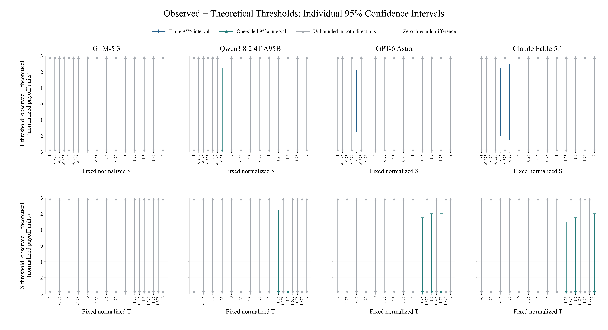
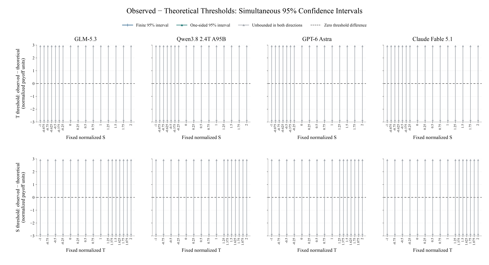

Blue: finite intervals. Teal: one-sided bounds. Gray: unbounded in both directions. Arrows mean the interval extends to infinity. The dashed line is zero difference. No point estimates are implied.

Full-size PNG · PDF · SVGNone of the 128 individual intervals excludes zero. After correction across all 128 comparisons, every interval is unbounded:

Full-size PNG · PDF · SVGEach panel compares observed and reported-belief theoretical 50%-cooperation crossing thresholds, holding the other normalized payoff fixed (R=1, P=0). Top row: T thresholds; bottom row: S thresholds. Intervals show observed minus theoretical threshold in normalized payoff units. Finite endpoints have caps; outward arrows indicate infinite bounds, not values at the plotted axis limits. No point estimates or midpoint estimates are plotted. All 128 comparisons appear, including unresolved comparisons. The underlying data contain 1,614 complete games and 3,228 decisions across 202 payoff matrices; slices reuse observations. Added midpoint cells cover only the PD region, not a complete 16×16 grid.
The individual-comparison figure has 6 finite, 9 one-sided and 113 fully unbounded intervals; none excludes zero. These are exploratory individual intervals, not simultaneous 95% coverage across the sweep. The companion figure applies correction across all 128 comparisons: every difference interval is unbounded. No statistically significant threshold shift is established, and equality is not established. Coverage is conditional on independent games, an ordered single population crossing, the tested design, and complete valid responses. Theory uses each decision's reported opponent belief and permits either action at an exact utility tie. Positive T displacement means cooperation persists to higher temptation; positive S displacement means more favorable S is required for cooperation. Theoretical cooperation switches do not occur inside strict PD under the own-expected-payoff benchmark. See the confidence table's METHODS.md for the derivation and limitations. No additional model calls were made.
Copyable caption